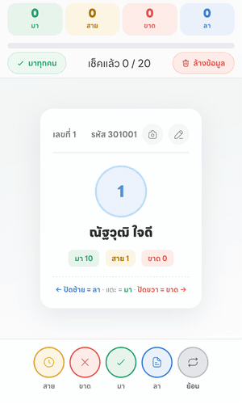
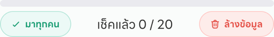
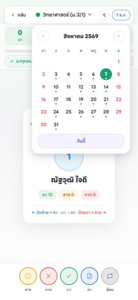

เปิดหน้าเช็กชื่อ
เข้าได้ 2 ทาง แล้วแต่สะดวก
- จากหน้าแรก — แตะการ์ดคาบที่กำลังจะสอน ระบบพาเข้าห้องนั้นให้เลย (ต้องลงตารางสอนไว้ก่อน)
- จากเมนูห้องเรียนวิชาสอน — กดปุ่ม “การเข้าเรียน” บนการ์ดของห้องที่ต้องการ
ระบบจะเปิดหน้าเช็กชื่อของวันนี้ให้อัตโนมัติ ถ้าเคยเช็กวันนี้ไปแล้ว จะเห็นสถานะเดิมที่บันทึกไว้ แก้ทับได้ทันที
เช็กชื่อบนมือถือ
นักเรียนจะขึ้นทีละคนเป็นการ์ด เลือกได้ 2 วิธี ใช้สลับกันได้ตลอด
วิธีที่ 1 · ปัดการ์ด — เร็วที่สุดเมื่อชินแล้ว
- ปัดซ้าย = ลา
- แตะกลางการ์ด = มา
- ปัดขวา = ขาด

สังเกตตัวเลขด้านบนที่เปลี่ยนตามทันที
ระหว่างที่ปัด การ์ดจะเปลี่ยนสีบอกล่วงหน้าว่ากำลังจะบันทึกเป็นอะไร — แดง = ขาด · น้ำเงิน = ลา ถ้าเปลี่ยนใจให้ลากกลับมากลางจอแล้วปล่อย จะไม่บันทึกอะไร
วิธีที่ 2 · กดปุ่มด้านล่าง — ถ้าไม่ถนัดปัด หรือต้องการเลือก “สาย” ซึ่งปัดไม่ได้

เช็กชื่อบนคอมพิวเตอร์
จอกว้างพอที่จะแสดงรายชื่อทั้งห้องพร้อมกัน แต่ละแถวมีปุ่มสถานะให้กดได้เลย ไม่ต้องเลื่อนทีละคน

คอลัมน์ สรุปสะสม ทางขวาบอกว่าเด็กคนนี้มา/ขาด/ลา/สาย ไปแล้วกี่ครั้งตลอดเทอม ใช้ดูประกอบตอนตัดสินใจได้ทันทีโดยไม่ต้องเปิดรายงาน
ทางลัดที่ช่วยประหยัดเวลาที่สุด

“มาทุกคน” — ตั้งทั้งห้องเป็น “มา” ในคลิกเดียว
กด “มาทุกคน” ก่อน → แล้วแก้เฉพาะคนที่ขาดหรือลา 2-3 คน
ห้อง 40 คนใช้เวลาไม่ถึง 15 วินาที เทียบกับการกดทีละคน 40 ครั้ง
ตัวนับ “เช็คแล้ว X / Y” — บอกว่าเช็กไปกี่คนจากทั้งหมดกี่คน ใช้ตรวจว่าตกใครไปหรือเปล่าก่อนออกจากหน้า
“ล้างข้อมูล” — ลบการเช็กชื่อของวันที่กำลังเปิดอยู่ทั้งหมด เพื่อเริ่มใหม่
เช็กย้อนหลัง และแก้ของวันก่อน
ลืมเช็กเมื่อวาน? หรือเช็กผิดวัน? แตะปุ่มวันที่มุมขวาบนเพื่อเปิดปฏิทิน แล้วเลือกวันที่ต้องการ

จุดสีเขียวช่วยให้เห็นทันทีว่าวันไหนยังไม่ได้เช็ก โดยไม่ต้องกดเข้าไปดูทีละวัน — วันที่ไม่มีจุดคือวันที่ยังว่างอยู่
เมื่อเลือกวันแล้ว หน้าจอจะเปลี่ยนเป็นการเช็กชื่อของวันนั้น ทำเหมือนปกติทุกอย่าง เสร็จแล้วกด “วันนี้” เพื่อกลับมาวันปัจจุบัน
ให้หน้าแรกเตือนว่าคาบไหนยังไม่ได้เช็ก
ถ้าลงตารางสอนไว้แล้ว (ดู หมวด 1 ขั้นที่ 3) หน้าแรกจะกลายเป็นตัวช่วยเตือนประจำวันให้คุณ

- แถบเตือนสีส้ม — ขึ้นเมื่อมีคาบที่ผ่านไปแล้วแต่ยังไม่ได้เช็กชื่อ แตะเพื่อไปเช็กได้ทันที
- ป้าย “เช็คแล้ว” — คาบไหนเรียบร้อยแล้วจะมีป้ายสีเขียวกำกับ
- ตัวเลขสรุปด้านบน — มา / สาย / ขาด / ลา ของวันนี้รวมทุกห้อง

คำถามที่ครูถามบ่อย
ต้องกดเซฟไหม?
ไม่ต้อง ทุกครั้งที่กดหรือปัด ระบบบันทึกให้ทันที ปิดหน้าไปแล้วกลับมาข้อมูลยังอยู่ครบ
เช็กชื่อไปแล้ว แก้ทีหลังได้ไหม?
ได้ตลอด เปิดวันนั้นขึ้นมาแล้วกดสถานะใหม่ทับได้เลย ไม่มีการล็อก
“สาย” ปัดไม่ได้ ทำไง?
การปัดรองรับแค่ มา/ขาด/ลา ถ้าต้องการ “สาย” ให้กดปุ่มด้านล่างแทน
สอนหลายห้องติดกัน ต้องออกไปเลือกห้องใหม่ทุกครั้งไหม?
ไม่ต้อง แตะชื่อวิชาด้านบนสุดของหน้าเช็กชื่อเพื่อสลับห้องได้เลย
ข้อมูลเช็กชื่อเอาไปทำอะไรต่อได้บ้าง?
ระบบคำนวณ เวลาเรียน (%) รายคนให้อัตโนมัติ ดูได้ที่การ์ดสรุปนักเรียน และออกไฟล์รายงานการเข้าเรียนเป็น Excel ได้